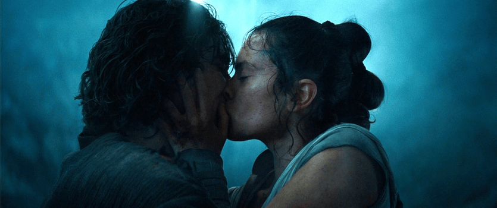

About Kylo Ren
Kylo Ren is cool! He is the son of Han Solo and Leia. Ben Solo was joined by the dark sideof the force and changed his name to Kylo Ren. He is the leader of the Knights of Ren and champion of the First Order. He felt a connection to Rey, a mysterious woman with the force. In time, Ray helped Solo to return to the light.
Kylo Ren's Lover
Kylo Ren's Characteristics
- He's got big hands
- He uses the force
- He is bad-ass
Kylo Ren's Lover
Ray is his only true friend and lover. She is strong with the force. Click the links below to read more about them: